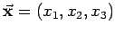

Inhalt Index DeskTop Bronstein

 Algebra und Diskrete Mathematik Klassische algebraische Strukturen Lie-Gruppen
Algebra und Diskrete Mathematik Klassische algebraische Strukturen Lie-Gruppen


Hängt eine Funktion f vom Ortsvektor  ab, , dann bedingt eine infinitesimale Drehung mit dem Winkel  um die Koordinatenachse i eine lineare Transformation von f nach
um die Koordinatenachse i eine lineare Transformation von f nach
| (5.143) |
Wenn die neue Funktion Di f im Punkt  denselben Wert annimmt wie die Funktion f im Punkt , dann berechnet sich die infinitesimale Änderung mit Hilfe der Differentialoperatoren und
denselben Wert annimmt wie die Funktion f im Punkt , dann berechnet sich die infinitesimale Änderung mit Hilfe der Differentialoperatoren und
| (5.144) |
Hinweis: Die Operatoren stellen ebenfalls eine Realisierung der infinitesimalen Generatoren der Drehgruppe SO(3) dar. In der Quantenmechanik entsprechen sie bis auf den Faktor den kartesischen Komponenten des Bahndrehimpulsoperators :